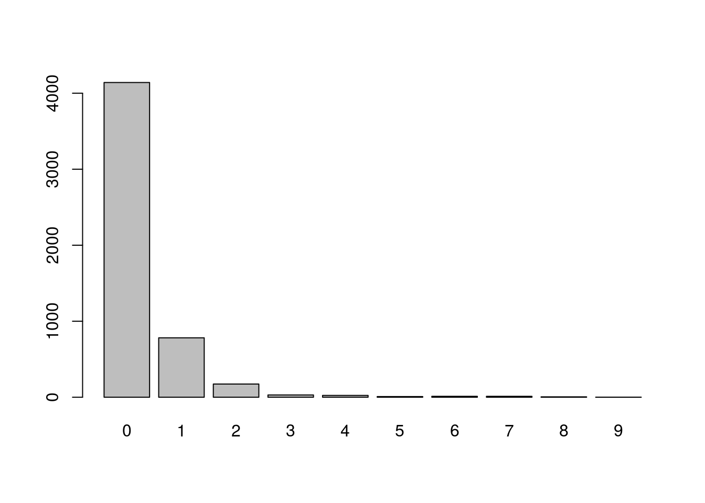
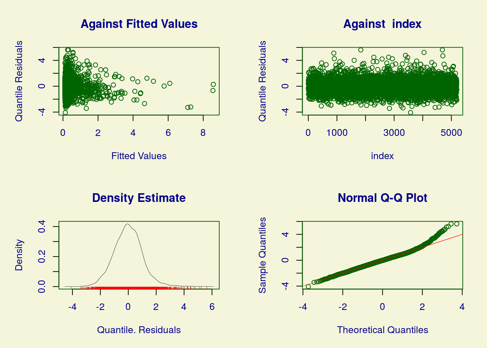
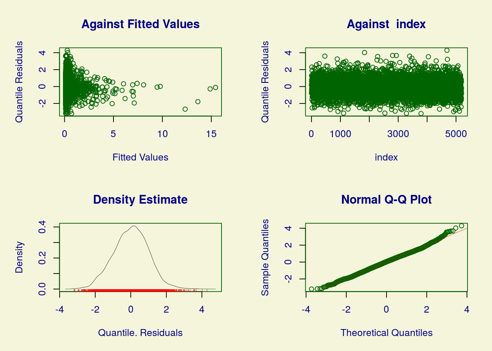
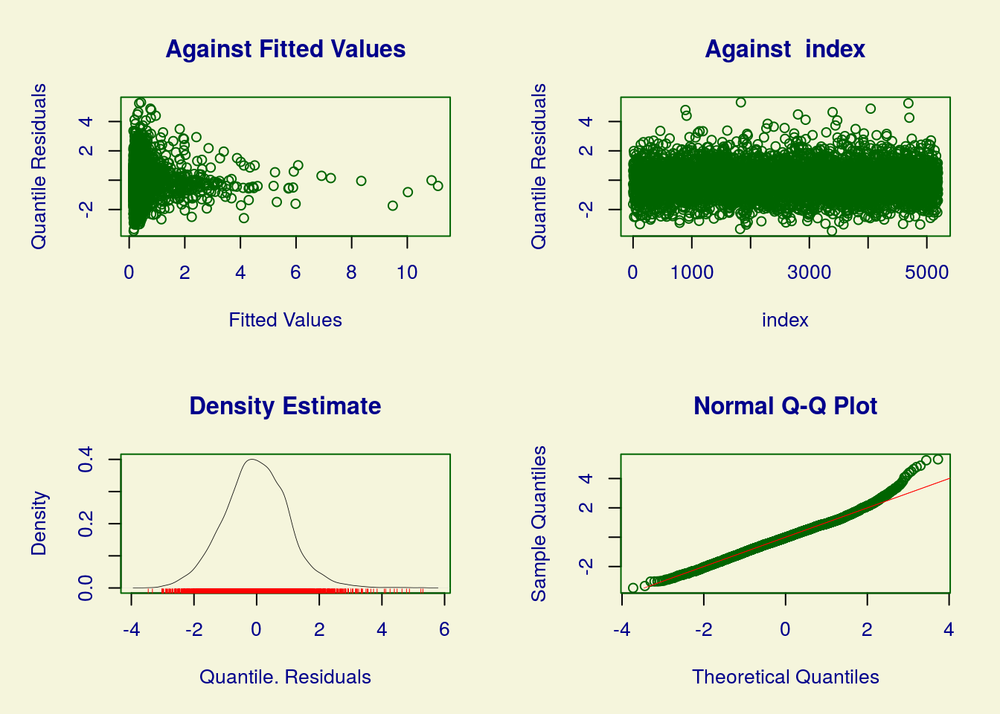
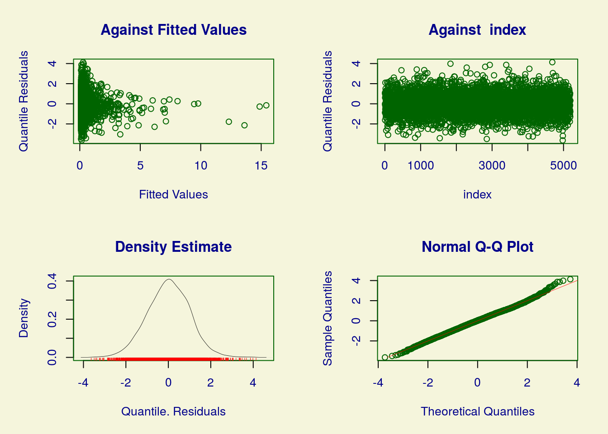
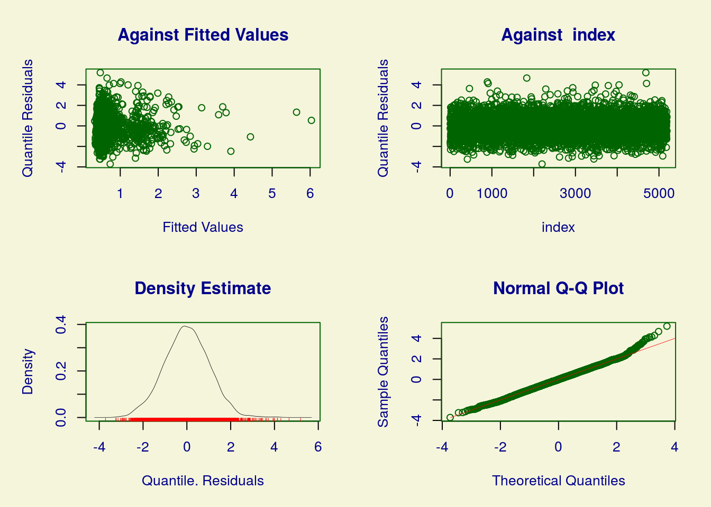
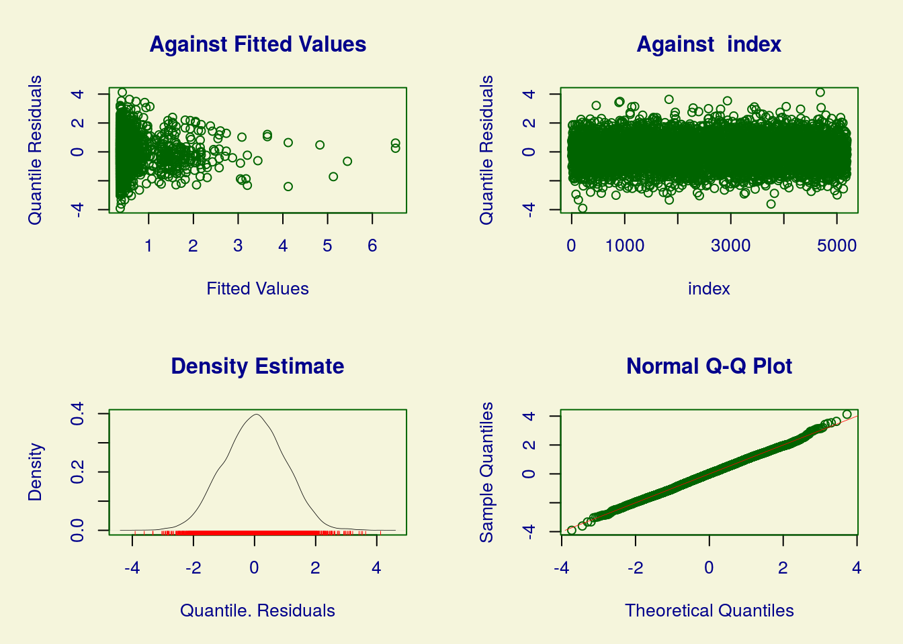

Vamos modelar o número de visitas ao médico nas duas últimas semanas (doctorco) em função de algumas das covariáveis disponíveis na base
Apenas ordenando as linhas da base de forma aleatória (estavam dispostas de forma sistemática).
dvisits$sex <- as.factor(dvisits$sex)
levels(dvisits$sex) <- c('Masculino', 'Feminino')
dvisits$levyplus <- factor(dvisits$levyplus)
levels(dvisits$levyplus) <- c('Publico', 'Particular')
dvisits$chcond1 <- factor(dvisits$chcond1)
levels(dvisits$chcond1) <- c('Nao cronico', 'Cronico')Convertendo algumas das variáveis para fator e renomeando os níveis.

O gráfico de barras evidencia uma grande freqência de indivíduos com zero consultas.
Todos os ajustes na sequência foram realizados usando a biblioteca gamlss (mesmo aqueles que poderiam ser feitos usando a função glm, para fins de padronização).
Vamos avaliar os ajustes de seis modelos distintos:
(sem inflação de zeros)
modelo1 <- gamlss(doctorco ~ sex + age + agesq
+ income + levyplus + illness + actdays + chcond1 + hospadmi
+ medicine, family = PO, data = dvisits)## GAMLSS-RS iteration 1: Global Deviance = 6628.372
## GAMLSS-RS iteration 2: Global Deviance = 6628.372
## ******************************************************************
## Summary of the Randomised Quantile Residuals
## mean = -0.004735209
## variance = 1.063899
## coef. of skewness = 0.3654912
## coef. of kurtosis = 4.383663
## Filliben correlation coefficient = 0.9935205
## ******************************************************************A biblioteca gamlss tem como padrão os resíduos quantílicos aleatorizados. O qqplot indica a não normalidade dos resíduos e, consequentemente, o desajuste do modelo.
(sem inflação de zeros)
modelo2 <- gamlss(doctorco ~ sex + age + agesq + income + levyplus + illness +
actdays + chcond1 + hospadmi + medicine, family = NBI,
data = dvisits)## GAMLSS-RS iteration 1: Global Deviance = 6370.117
## GAMLSS-RS iteration 2: Global Deviance = 6357.454
## GAMLSS-RS iteration 3: Global Deviance = 6357.372
## GAMLSS-RS iteration 4: Global Deviance = 6357.372
## ******************************************************************
## Summary of the Randomised Quantile Residuals
## mean = 0.01253109
## variance = 0.9658382
## coef. of skewness = 0.01900208
## coef. of kurtosis = 3.195999
## Filliben correlation coefficient = 0.9991059
## ******************************************************************A análise de resíduos indica melhor ajuste em relação ao modelo de Poisson. Mas ainda se observa algum desajuste.
##Modelo 3: Poisson com inflação de zeros
(mas sem covariáveis para o componente do excesso de zeros)
help("ZIP")
modelo3 <- gamlss(doctorco ~ sex + age + agesq + income + levyplus + illness +
actdays + chcond1 + hospadmi + medicine,
family = ZIP, data = dvisits) ## GAMLSS-RS iteration 1: Global Deviance = 6535.095
## GAMLSS-RS iteration 2: Global Deviance = 6522.272
## GAMLSS-RS iteration 3: Global Deviance = 6517.939
## GAMLSS-RS iteration 4: Global Deviance = 6516.39
## GAMLSS-RS iteration 5: Global Deviance = 6515.82
## GAMLSS-RS iteration 6: Global Deviance = 6515.607
## GAMLSS-RS iteration 7: Global Deviance = 6515.527
## GAMLSS-RS iteration 8: Global Deviance = 6515.495
## GAMLSS-RS iteration 9: Global Deviance = 6515.482
## GAMLSS-RS iteration 10: Global Deviance = 6515.477
## GAMLSS-RS iteration 11: Global Deviance = 6515.475
## GAMLSS-RS iteration 12: Global Deviance = 6515.474
## ******************************************************************
## Summary of the Randomised Quantile Residuals
## mean = -0.01944443
## variance = 1.055439
## coef. of skewness = 0.2321606
## coef. of kurtosis = 3.886979
## Filliben correlation coefficient = 0.9963863
## ******************************************************************Problemas de ajuste semelhantes ao modelo de Poisson sem inflação.
(mas sem covariáveis para o componente do excesso de zeros)
help("ZINBI")
modelo4 <- gamlss(doctorco ~ sex + age + agesq + income + levyplus + illness +
actdays + chcond1 + hospadmi + medicine,
family = ZINBI, data = dvisits) ## GAMLSS-RS iteration 1: Global Deviance = 6434.662
## GAMLSS-RS iteration 2: Global Deviance = 6394.963
## GAMLSS-RS iteration 3: Global Deviance = 6379.93
## GAMLSS-RS iteration 4: Global Deviance = 6370.846
## GAMLSS-RS iteration 5: Global Deviance = 6365.247
## GAMLSS-RS iteration 6: Global Deviance = 6361.725
## GAMLSS-RS iteration 7: Global Deviance = 6359.463
## GAMLSS-RS iteration 8: Global Deviance = 6357.991
## GAMLSS-RS iteration 9: Global Deviance = 6357.387
## GAMLSS-RS iteration 10: Global Deviance = 6357.372
## GAMLSS-RS iteration 11: Global Deviance = 6357.372
## ******************************************************************
## Summary of the Randomised Quantile Residuals
## mean = 0.006675355
## variance = 0.9929617
## coef. of skewness = -0.00746178
## coef. of kurtosis = 3.306128
## Filliben correlation coefficient = 0.9992312
## ******************************************************************(incluindo as covariáveis também na modelagem do componente do excesso de zeros)
modelo5 <- gamlss(doctorco ~ sex + age + agesq + income + levyplus + illness +
actdays + chcond1 + hospadmi + medicine,
sigma.formula = ~ sex + age + agesq + income + levyplus +
illness + actdays + chcond1 + hospadmi + medicine,
family = ZIP, data = dvisits) ## GAMLSS-RS iteration 1: Global Deviance = 6510.456
## GAMLSS-RS iteration 2: Global Deviance = 6384.869
## GAMLSS-RS iteration 3: Global Deviance = 6292.056
## GAMLSS-RS iteration 4: Global Deviance = 6266.655
## GAMLSS-RS iteration 5: Global Deviance = 6256.481
## GAMLSS-RS iteration 6: Global Deviance = 6252.43
## GAMLSS-RS iteration 7: Global Deviance = 6250.854
## GAMLSS-RS iteration 8: Global Deviance = 6250.253
## GAMLSS-RS iteration 9: Global Deviance = 6250.026
## GAMLSS-RS iteration 10: Global Deviance = 6249.942
## GAMLSS-RS iteration 11: Global Deviance = 6249.911
## GAMLSS-RS iteration 12: Global Deviance = 6249.899
## GAMLSS-RS iteration 13: Global Deviance = 6249.894
## GAMLSS-RS iteration 14: Global Deviance = 6249.892
## GAMLSS-RS iteration 15: Global Deviance = 6249.891
## ******************************************************************
## Summary of the Randomised Quantile Residuals
## mean = -0.001643474
## variance = 1.056911
## coef. of skewness = 0.1074494
## coef. of kurtosis = 3.393902
## Filliben correlation coefficient = 0.9986883
## ******************************************************************Observe que para incluir covariáveis na modelagem do parâmetro do excesso de zeros, tivemos que declarar uma segunda fórmula em “sigma.formula = ~ …”
(incluindo as covariáveis também na modelagem do componente do excesso de zeros)
modelo6 <- gamlss(doctorco ~ sex + age + agesq + income + levyplus + illness +
actdays + chcond1 + hospadmi + medicine,
nu.formula = ~ sex + age + agesq + income + levyplus +
illness + actdays + chcond1 + hospadmi + medicine,
family = ZINBI, data = dvisits) ## GAMLSS-RS iteration 1: Global Deviance = 6390.986
## GAMLSS-RS iteration 2: Global Deviance = 6196.292
## GAMLSS-RS iteration 3: Global Deviance = 6152.73
## GAMLSS-RS iteration 4: Global Deviance = 6146.837
## GAMLSS-RS iteration 5: Global Deviance = 6145.174
## GAMLSS-RS iteration 6: Global Deviance = 6144.508
## GAMLSS-RS iteration 7: Global Deviance = 6144.202
## GAMLSS-RS iteration 8: Global Deviance = 6144.055
## GAMLSS-RS iteration 9: Global Deviance = 6143.983
## GAMLSS-RS iteration 10: Global Deviance = 6143.951
## GAMLSS-RS iteration 11: Global Deviance = 6143.934
## GAMLSS-RS iteration 12: Global Deviance = 6143.926
## GAMLSS-RS iteration 13: Global Deviance = 6143.921
## GAMLSS-RS iteration 14: Global Deviance = 6143.919
## GAMLSS-RS iteration 15: Global Deviance = 6143.917
## GAMLSS-RS iteration 16: Global Deviance = 6143.917## ******************************************************************
## Summary of the Randomised Quantile Residuals
## mean = -0.003352731
## variance = 1.003999
## coef. of skewness = -0.04096202
## coef. of kurtosis = 3.083735
## Filliben correlation coefficient = 0.9997122
## ******************************************************************No caso da binomial negativa, para incluir covariáveis na modelagem do parâmetro do excesso de zeros, tivemos que declarar uma segunda fórmula em “nu.formula = ~ …”. Isso porque, para a ZINB, o gamlss identifica sigma como o parâmetro de dispersão.
Vamos comparar os modelos pelos respectivos AICs.
## df AIC
## modelo6 23 6189.917
## modelo5 22 6293.891
## modelo2 12 6381.371
## modelo4 13 6383.371
## modelo3 12 6539.474
## modelo1 11 6650.372Observe que o modelo 6 (ZIBN com covariáveis para o excesso de zeros) foi aquele que produziu menor AIC. Pelos gráficos de resíduos, adicionalmente, fica claro que é o que proporciona melhor ajuste. Vamos explorar um pouco mais ele.
## ******************************************************************
## Family: c("ZINBI", "Zero inflated negative binomial type I")
##
## Call: gamlss(formula = doctorco ~ sex + age + agesq + income +
## levyplus + illness + actdays + chcond1 + hospadmi +
## medicine, nu.formula = ~sex + age + agesq + income +
## levyplus + illness + actdays + chcond1 + hospadmi +
## medicine, family = ZINBI, data = dvisits)
##
## Fitting method: RS()
##
## ------------------------------------------------------------------
## Mu link function: log
## Mu Coefficients:
## Estimate Std. Error t value Pr(>|t|)
## (Intercept) -0.987495 0.282509 -3.495 0.000477 ***
## sexFeminino -0.031482 0.081265 -0.387 0.698471
## age 0.573766 1.451491 0.395 0.692642
## agesq -0.890723 1.567536 -0.568 0.569903
## income -0.108776 0.126754 -0.858 0.390840
## levyplusParticular -0.033365 0.079749 -0.418 0.675688
## illness 0.024569 0.029703 0.827 0.408193
## actdays 0.089471 0.007236 12.364 < 2e-16 ***
## chcond1Cronico -0.025228 0.080358 -0.314 0.753575
## hospadmi 0.201647 0.043833 4.600 4.32e-06 ***
## medicine 0.063351 0.022732 2.787 0.005341 **
## ---
## Signif. codes: 0 '***' 0.001 '**' 0.01 '*' 0.05 '.' 0.1 ' ' 1
##
## ------------------------------------------------------------------
## Sigma link function: log
## Sigma Coefficients:
## Estimate Std. Error t value Pr(>|t|)
## (Intercept) -0.7149 0.1459 -4.899 9.94e-07 ***
## ---
## Signif. codes: 0 '***' 0.001 '**' 0.01 '*' 0.05 '.' 0.1 ' ' 1
##
## ------------------------------------------------------------------
## Nu link function: logit
## Nu Coefficients:
## Estimate Std. Error t value Pr(>|t|)
## (Intercept) 1.35894 0.71789 1.893 0.05842 .
## sexFeminino -0.42549 0.21641 -1.966 0.04934 *
## age 5.47141 4.20976 1.300 0.19376
## agesq -8.80309 4.81515 -1.828 0.06758 .
## income -0.04045 0.33542 -0.121 0.90402
## levyplusParticular -0.31691 0.22369 -1.417 0.15662
## illness -0.57184 0.12925 -4.424 9.87e-06 ***
## actdays -1.55892 0.52896 -2.947 0.00322 **
## chcond1Cronico 0.12111 0.23266 0.521 0.60270
## hospadmi -0.35096 0.21280 -1.649 0.09916 .
## medicine -0.56346 0.12364 -4.557 5.30e-06 ***
## ---
## Signif. codes: 0 '***' 0.001 '**' 0.01 '*' 0.05 '.' 0.1 ' ' 1
##
## ------------------------------------------------------------------
## No. of observations in the fit: 5190
## Degrees of Freedom for the fit: 23
## Residual Deg. of Freedom: 5167
## at cycle: 16
##
## Global Deviance: 6143.917
## AIC: 6189.917
## SBC: 6340.67
## ******************************************************************Observe que o resumo do modelo é separado em duas partes: a primeira para a média da binomial negativa e a segunda para a probabilidade de zeros excedentes.
Podemos observar que a probabilidade associada ao excesso de zeros é menor para pacientes do sexo feminino; diminui conforme o número de enfermidades nas últimas duas semanas (illness); diminui conforme o número de dias inativos nas últimas duas semanas (actdays); diminui conforme o número de medicações prescritas nas últimas duas semanas (medicine).
Ao olhar para a parte da binomial negativa, verificamos que a frequência de consultas, em média, aumenta conforme o número de dias inativos (actdays); aumenta conforme o número de noites internado (hospadmi) e aumenta conforme o número de medicações prescritas (medicine).
Deixo como tarefa escrever as expressões dos modelos ajustados e explorar os efeitos.
Apenas para fins de ilustração, vamos ajustar um modelo apenas com as variáveis com efeito marginalmente significativo ao nível de 5% (além da idade, para o componente do excesso de zeros).
modelo7 <- gamlss(doctorco ~ actdays + hospadmi + medicine,
nu.formula = ~ sex + age + agesq +illness + actdays + medicine,
family = ZINBI, data = dvisits)## GAMLSS-RS iteration 1: Global Deviance = 6306.03
## GAMLSS-RS iteration 2: Global Deviance = 6163.858
## GAMLSS-RS iteration 3: Global Deviance = 6158.019
## GAMLSS-RS iteration 4: Global Deviance = 6155.61
## GAMLSS-RS iteration 5: Global Deviance = 6154.486
## GAMLSS-RS iteration 6: Global Deviance = 6153.968
## GAMLSS-RS iteration 7: Global Deviance = 6153.731
## GAMLSS-RS iteration 8: Global Deviance = 6153.623
## GAMLSS-RS iteration 9: Global Deviance = 6153.575
## GAMLSS-RS iteration 10: Global Deviance = 6153.553
## GAMLSS-RS iteration 11: Global Deviance = 6153.542
## GAMLSS-RS iteration 12: Global Deviance = 6153.538
## GAMLSS-RS iteration 13: Global Deviance = 6153.535
## GAMLSS-RS iteration 14: Global Deviance = 6153.534
## GAMLSS-RS iteration 15: Global Deviance = 6153.534## Likelihood Ratio Test for nested GAMLSS models.
## (No check whether the models are nested is performed).
##
## Null model: deviance= 6153.534 with 12 deg. of freedom
## Altenative model: deviance= 6143.917 with 23 deg. of freedom
##
## LRT = 9.617128 with 11 deg. of freedom and p-value= 0.5651195Os ajustes não diferem significativamente. Podemos adotar o modelo 7, portanto.

## ******************************************************************
## Summary of the Randomised Quantile Residuals
## mean = -0.0001283558
## variance = 1.001868
## coef. of skewness = -0.008838728
## coef. of kurtosis = 2.989365
## Filliben correlation coefficient = 0.999719
## ******************************************************************## ******************************************************************
## Family: c("ZINBI", "Zero inflated negative binomial type I")
##
## Call: gamlss(formula = doctorco ~ actdays + hospadmi + medicine,
## nu.formula = ~sex + age + agesq + illness + actdays +
## medicine, family = ZINBI, data = dvisits)
##
## Fitting method: RS()
##
## ------------------------------------------------------------------
## Mu link function: log
## Mu Coefficients:
## Estimate Std. Error t value Pr(>|t|)
## (Intercept) -1.009562 0.076839 -13.14 < 2e-16 ***
## actdays 0.089786 0.007152 12.55 < 2e-16 ***
## hospadmi 0.229396 0.041407 5.54 3.17e-08 ***
## medicine 0.060010 0.018755 3.20 0.00138 **
## ---
## Signif. codes: 0 '***' 0.001 '**' 0.01 '*' 0.05 '.' 0.1 ' ' 1
##
## ------------------------------------------------------------------
## Sigma link function: log
## Sigma Coefficients:
## Estimate Std. Error t value Pr(>|t|)
## (Intercept) -0.7084 0.1432 -4.948 7.75e-07 ***
## ---
## Signif. codes: 0 '***' 0.001 '**' 0.01 '*' 0.05 '.' 0.1 ' ' 1
##
## ------------------------------------------------------------------
## Nu link function: logit
## Nu Coefficients:
## Estimate Std. Error t value Pr(>|t|)
## (Intercept) 1.2947 0.5933 2.182 0.02914 *
## sexFeminino -0.3999 0.1734 -2.306 0.02114 *
## age 4.4765 3.1797 1.408 0.15923
## agesq -7.1446 3.5822 -1.994 0.04616 *
## illness -0.5974 0.1078 -5.540 3.17e-08 ***
## actdays -1.7479 0.6220 -2.810 0.00497 **
## medicine -0.5831 0.1124 -5.189 2.20e-07 ***
## ---
## Signif. codes: 0 '***' 0.001 '**' 0.01 '*' 0.05 '.' 0.1 ' ' 1
##
## ------------------------------------------------------------------
## No. of observations in the fit: 5190
## Degrees of Freedom for the fit: 12
## Residual Deg. of Freedom: 5178
## at cycle: 15
##
## Global Deviance: 6153.534
## AIC: 6177.534
## SBC: 6256.188
## ******************************************************************Embora as estimativas, numericamente, tenham sido alteradas, as conclusões apresentadas anteriormente se mantém.
## 2.5 % 97.5 %
## (Intercept) -1.16016348 -0.85896040
## actdays 0.07576936 0.10380296
## hospadmi 0.14823957 0.31055327
## medicine 0.02325016 0.09676993## 2.5 % 97.5 %
## (Intercept) 1.1440569 1.44525995
## sexFeminino -0.7396899 -0.06004108
## age -1.7555109 10.70859993
## agesq -14.1656515 -0.12352664
## illness -0.8086798 -0.38604047
## actdays -1.7619162 -1.73388261
## medicine -0.6198519 -0.54633217Intervalos de confiança.
Valores ajustados para a média da binomial negativa para cada linha da base.
Valores ajustados para a probabilidade de zero excedente para cada linha da base.
## 2096 2434 4314 931 4698 1968
## 0.22980636 0.38092510 0.04793570 0.32713137 0.11978515 0.08701931Valores ajustados para o número esperado de consultas para cada linha da base.